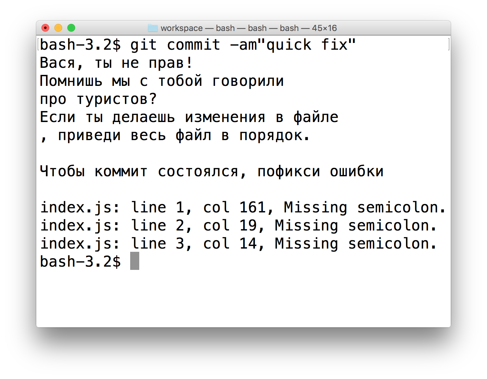
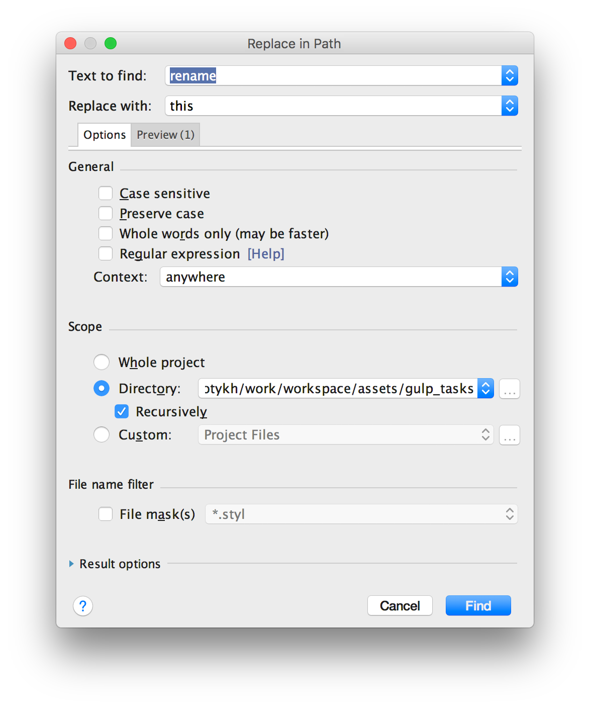
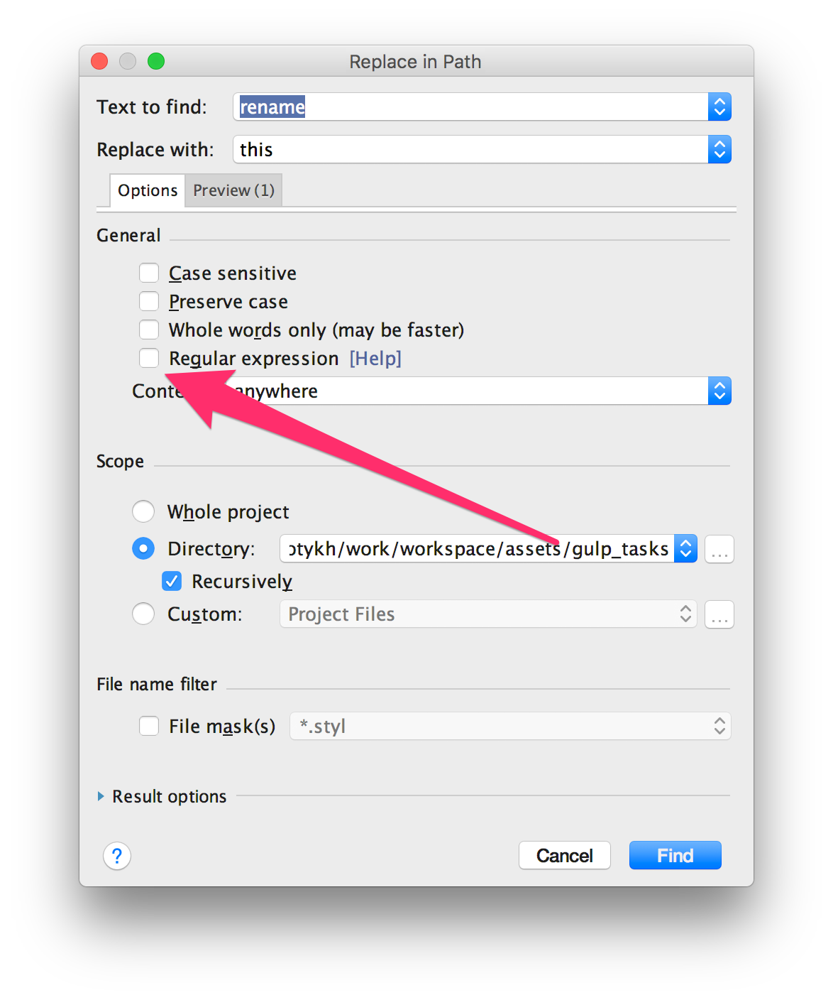
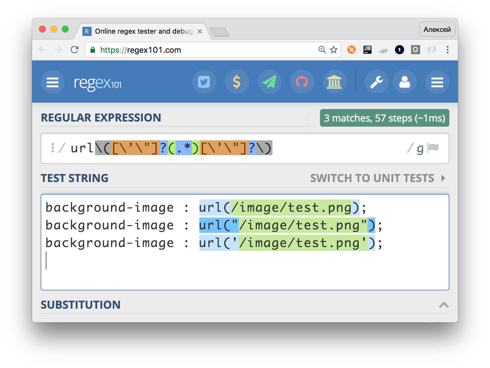

Рефакторинг в большом проекте.
Алексей Золотых, Wrike
Рудольф Клаузиус
1822 — 1888
Второе начало термодинамики
Закон неубывания энтропии
принцип КИДАО
принцип КИДАО SMART
S — Specific (Конкретный)
M — Measurable (Измеримый)
A — Attainable, Achievable (Достижимый)
R — Relevant (Актуальный)
T — Time-bound (Ограниченный во времени)
Рефакторить фронтенд сложно
Основные причины
- Минимум 3 контекста:
html, css, js , less, stylus, typescript, jade, jsx - Контексты плохо связаны между собой
Удобно добавлять префикс js- для классов, которые использует javascript
Острожно!
Не стоит все писать на JS!

Чем чаще, тем меньше проблем
- Меньше изменений — меньше ошибок
- Вы всегда в контексте
- Отделу тестирования не нужно тратить много времени
- Начальство не заметит подвоха
Как я узнал про большой рефакторинг
- 2 000 000 строк кода
- Измененные библиотеки под VCS
- Полсотни разработчиков, которые постоянно пишут фичи
- В коде много глобальных переменных
Принцип туриста
полянку нужно оставить чище, чем она была
Решение
Медленный рефакторинг и добрые туристы по принуждению!
Git hooks + статический анализ кода
— Нет времени объяснять...
— Нужен коммит
Рефакторинг, когда поздно пить Боржоми
Два подхода к рефакторингу
- Код как текст
- Код как код
Поиск, консоль и регулярные выражения
- Работа с путями
- Работа со стилями
- Небольшие изменения в коде
Встроенные средства для рефакторинга
- Поиск и замена
- Переименование
- Перетаскивание мышкой файлов и папок
Поиск и замена в IDE
Поиск и замена в IDE
Иногда, в бою, это почти всегда не работает
Консоль
awk, sed, rm, mv, touch, ag, grep, ack, cat, pbcopy, pbpaste...
#!/bin/bash
STATIC_HOST="http://example.com"
sed -i '' "s|url(\([^)]*\)|url($STATIC_HOST\1|g" style.css
Есть проблемы
...
background-image : url(/image/test.png);
background-image : url("/image/test.png");
background-image : url('/image/test.png');
...
Нужно предусмотреть все варианты
Отладчик регулярных выражений

Используйте статические анализаторы
Единообразный код проще рефакторить
eslint, jshint, csslint и еще много много других
stylelint.io
- Поддержка LESS, SCSS, SASS
- Плагины
Можно положить настройки от IDEA в репо
https://www.gitignore.io/api/Intellij
.idea/inspectionProfiles
Рефакторинг на основе AST
(Абстрактное синтаксическое дерево)
grasp
npm install -g grasp
CSS подобный синтаксис
$ grasp 'if.test[op=&&]' a.js
2: if (x && f(x)) { return x; }
5: if (xs.length && ys.length) {
10: if (x == 3 && list[x]) {
Поиск по шаблонам
$ grasp -e 'return __ + __' b.js
3: if (x < 2) { return x + 2; }
13: return '>>' + str.slice(2);
15: return f(z) + x;
Рефакторинг
$ cat c.js
f(x < y, x == z);
$ grasp bi --replace '{{.r}}+{{.l}}' c.js
f(y+x, z+x);
Есть API
var grasp = require('grasp');
var replacer = grasp
.replace('equery', '__ + __', '{{.l}} - {{.r}}');
var processedCode = replacer(code);
jscodeshift
jscodeshift is a toolkit for running codemods over multiple JS files.
https://github.com/facebook/jscodeshiftCodemods
/**
* This replaces every occurence of variable "foo".
*/
module.exports = function(fileInfo, api) {
return api.jscodeshift(fileInfo.source)
.findVariableDeclarators('foo')
.renameTo('bar')
.toSource();
}
Готовый сборник рецептов
https://github.com/cpojer/js-codemod
- var в const или let.
- Обратные вызовы в cтрелочные функции
- Строки в шаблоны
POSTCSS + plugins
- Убрать дублирование стилей
- Уменьшить разброс цветов
- Убрать префиксы
- Выделить новые переменные
Мердж изменений — очень больно
Gulp
gulp.task('refactor', function () {
return gulp.src('folder/**/*.js') // Нужные файлы для рефакторинга
.pipe(RefactoringPlugin()) // Рефакторим код
.pipe(gulp.dest('./')) // Кладем на место
})
Если что-то пошло не так, то
$ git reset --hard
$ git merge origin/master
# Правим код миграции
$ gulp refactor
Баги не всегда очевидны


А вы вообще уверены что это баг?!
— Мы подумали и решили, что красный цвет лучше!